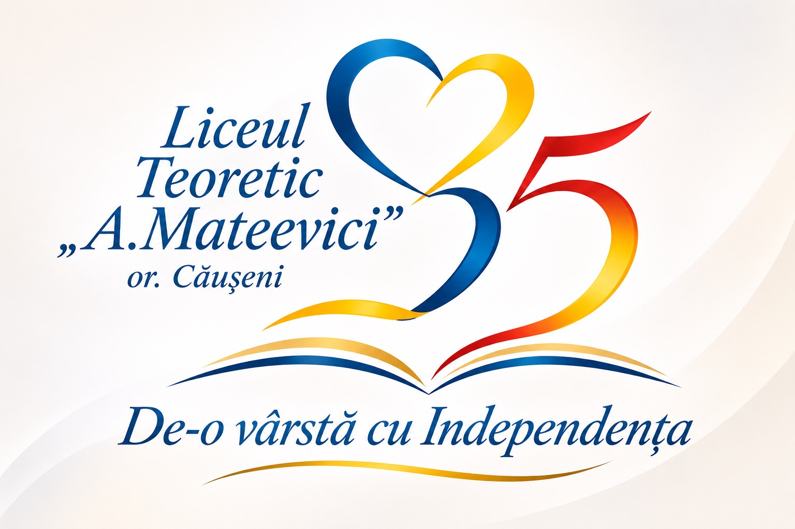
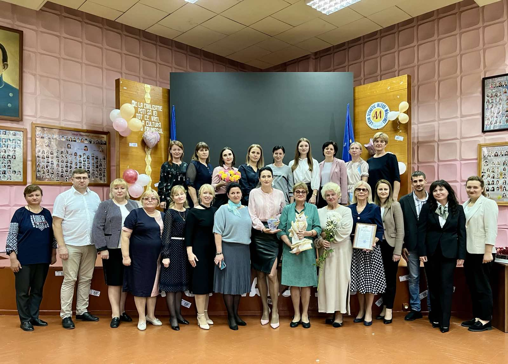

Prolog
De-o vârstă cu independența

Câte cărți are biblioteca liceului nostru? Atâtea câte destine au trecut pragul lui. Fiecare om este o carte, fiecare generație — un capitol, iar fiecare destin — o poveste care merită citită. Din aceste povești s-a născut biblioteca noastră vie: o bibliotecă a oamenilor, a amintirilor și a visurilor. Anul 1991 a însemnat două începuturi. O țară și-a declarat independența și și-a ales propriul drum. O școală și-a deschis ușile și a pornit să formeze generațiile care aveau să construiască viitorul. De atunci, istoriile Republicii Moldova și ale Liceului Teoretic „Alexei Mateevici” din Căușeni au mers înainte, fiecare cu drumul și încercările sale, dar unite de aceeași speranță.

O țară își hotărăște viitorul. O școală formează oamenii care îl construiesc. Prin educație, tinerii învață să gândească liber, să aleagă responsabil și să apere valorile unei societăți democratice. În cei 35 de ani, fiecare elev a adăugat o filă la povestea liceului, fiecare profesor a lăsat o lumină, iar fiecare generație a dus mai departe ceea ce a primit. Cartea aceasta nu se închide odată cu aceste pagini. Ea rămâne deschisă și va fi completată de generațiile care vin, așa cum și istoria țării se scrie mai departe, prin oamenii și alegerile fiecărei generații. Astăzi, deschidem câteva dintre paginile ei. Cu recunoștință pentru cei care au început acest drum, cu drag pentru toți cei care l-au parcurs și cu încredere în cei care îl vor continua. Două istorii. Aceeași vârstă. Un viitor pe care îl scriem împreună. Vă invităm să deschideți, rând pe rând, capitolele acestei biblioteci vii — pagini în care se întâlnesc istoria liceului, amintirile și destinele celor care i-au trecut pragul.